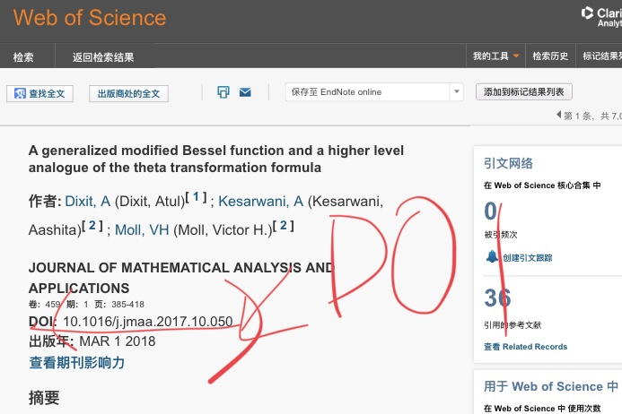
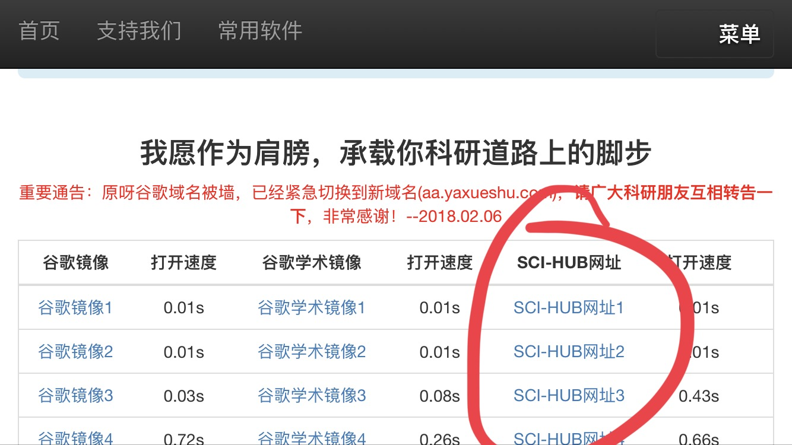

SSCI论文在哪里找？
SSCI（Social science citation index，译作社会科学引文索引）为美国科学情报研究所（Institute for Scientific Information，简称ISI）建立的综合性社科文献资料库，涉及经济、法律、管理、心理学、区域研究、社会学、资讯科学等。收录 50 个语种的 1700多种重要的国际性期刊，累计约 350 万条记录。
ISI web of knowledge是Thomson Scientific网络平台（收费）。通过"http://apps.webofknowledge.com" 登录进入，或通过学校图书馆（如:https://login.libezproxy.must.edu.mo/login?url=http://apps.webofknowledge.com/) 或机构网站提供的入口进入。
该产品是汤森路透公司的online学术服务产品，它包含了子产品 “web of science”数据库以及其他资源。Web of science数据库就是我们平时检索SSCI数据时所使用的网页。
SSCI在哪里下？
通过在SSCI查到文章的DOI号，

然后打开一个神奇的、经常会消失的网站，
粘贴在搜索框里。
网站不见怎么办？
因为这个网站经常会消失，
所以可以通过一个浏览器提示不安全的网站来查找它最新的地址。
